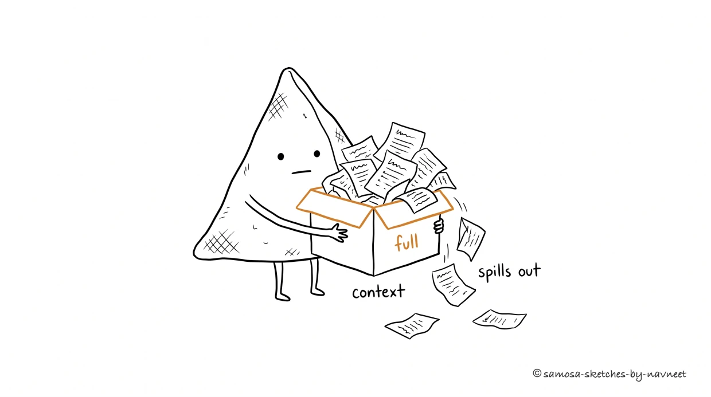

Every model has a fixed-size working memory. Understanding it changes how you design every AI feature.
Every word you send is a token on the tab,
Fill the window up and the signal starts to drag.
Lost in the middle, buried out of sight —
Finite memory means you choose what sees the light.
I What Is a Context Window?

The context window is a fixed-size box. Everything the model can “see” has to fit — past the brim, the oldest pages spill out.
Analogy
Think of the context window as the model's desk. Your system prompt, conversation history, retrieved documents, and the user's latest message all have to fit on this one desk. If it doesn't fit, it falls off the edge. No overflow drawer, no filing cabinet, no second desk.
The model processes the entire context at once, weighing every token against every other token through self-attention. It doesn't read top-to-bottom — it sees everything simultaneously. Powerful, because the model can connect your system prompt to the user's latest question. Limiting, because there's a hard ceiling on how much it can consider at any moment.
There's no hard drive to page to. When the API call ends, the desk is cleared completely. The model doesn't remember the last conversation any more than a calculator remembers yesterday's math.
Key Insight
LLMs feel like they remember, but they don't. When ChatGPT references something you said ten messages ago, the application is re-sending your entire conversation history on every API call. Every apparent "memory" is your application doing the work.
Here's the takeaway: your application decides what goes on the desk. You choose what context to include, what to leave out, how to structure it. Context management isn't the model's job — it's yours.
II How Big Is Big?
Context windows exploded from 4,096 tokens in early 2022 to over 1 million by 2025. Sounds like a solved problem — just use the biggest window and never think about it again. Except that would be like renting a warehouse to store a shoebox.
Bigger isn't free. Cost scales linearly with context length: filling a 200K-token window costs roughly 50x more than filling a 4K window. Latency increases too — more context means longer time-to-first-token. And quality actually degrades. Models are great with the first and last few pages of a 500-page dump, and fuzzy on everything in between (more on that in Section III).
Builder Tip
Match the window to the task, not the other way around. A support chatbot might need 4K–8K tokens. A document analysis tool might need 128K. A "chat with your codebase" feature might genuinely need 1M. Every token you send costs money, time, and potentially quality.
Explore the scale of different models below:
Explore
How Big Is Your Window?
Click a model to see how much fits in its context window.
LogarithmicNormalized
III The "Lost in the Middle" Problem
A 2023 paper by researchers at Stanford, UC Berkeley, and Samaya AI confirmed what practitioners had suspected: models pay the most attention to the beginning and end of the context window. Information in the middle gets overlooked — sometimes dramatically.
The test was simple: hide a fact among a set of documents, then ask the model to find it. At the edges of the context, accuracy exceeded 90%. Buried in the middle of a long context, it dropped 20–30 percentage points. The performance curve is a distinct U-shape — high at the edges, low in the middle. The longer the context, the deeper the valley.
Consider how most AI apps structure their context: system prompt at the top, conversation history, retrieved documents, then the user's question at the bottom. Everything sandwiched in the middle sits in the danger zone. Your most important RAG chunks are the ones most likely to be ignored — the information equivalent of burying the lead on page 47.
Takeaway
Context isn't just about capacity — it's about placement. A 200K-token window where critical info sits at the 50% mark may perform worse than a 16K window where the same info is at the very beginning. Put critical instructions at the top and bottom. Rank RAG chunks by relevance and place the best ones nearest the edges.
Visualize
Needle in a Haystack
This heatmap shows how well models retrieve a hidden fact based on where it's placed. Greener = better retrieval.
Low accuracyHigh accuracy
The U-shaped pattern is clear: models struggle most with information placed in the middle of long contexts. Short contexts are mostly safe, but as context length grows, the "lost in the middle" effect becomes pronounced — especially at 32K+ tokens.
IV When You Hit the Limit
What happens when your context exceeds the window? Three scenarios, none good:
Failure Mode
What Happens
How It Feels
API error
Provider rejects the request outright (400-level error)
Painful, but at least you know it broke
Silent truncation
Middleware quietly drops tokens from the start — your system prompt vanishes
The model still responds, but without guard rails or personality. Users notice; nobody knows why.
Degraded quality
At 95% capacity the model has no room to think and attention quality collapses
Like working at a desk piled so high with papers you can barely find your keyboard
This leads to what engineers call the context budget problem. You have a fixed token budget per API call, and every component of your system competes for it: system prompt, conversation history, retrieved documents, the user's message, and reserved output tokens. Zero-sum game. A modest setup — 500-token system prompt, 10 turns of history, 3 RAG chunks, 1,000 tokens reserved for the response — already consumes 6,000 tokens. On an 8K model, that's 73% capacity before the conversation even gets interesting.
Key Insight
Context management is an architecture problem, not an afterthought. How many turns of history to keep, when to summarize, how many chunks to retrieve, what happens at the ceiling — these are product decisions that directly shape user experience.
Try building your own context budget below:
Calculate
Context Budget Calculator
Configure your AI feature's context usage. Watch how fast the budget fills up.
System promptInstructions & personality
500 tokens
Conversation historyTurns of back-and-forth
10 turns
Retrieved documentsRAG chunks (~500 tokens each)
3 chunks
Reserved for responseOutput token budget
1,000 tokens
Test your understanding
Article Recap
5 questions covering the key concepts from this article.
1 of 5
V What's Next
Now you know the context window: what it is, why bigger isn't better, how the U-shaped attention curve shapes prompt design, and why context is a budget where every component competes for space.
In Part 2: Designing for Memory, we cover the practical strategies: conversation history management, smart summarization, sliding windows, and the full memory stack behind production AI applications. You'll learn how to give users the feeling of continuous memory while staying within hard limits.
The context window defines the playing field. Memory design is how you win on it.